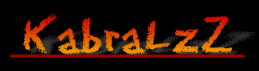

A Nação Brasileira está sendo dessangrada. Escolas caindo aos pedaços. Hospitais apodrecendo. Nosso povo morrendo de fome. Um grande esforço deve ser feito, neste momento, em prol da unidade e da salvação nacional. É hora de unir, não de desunir. Vamos nos unir, todos nós, cidadãos comuns da nossa terra, que estivemos até agora observando a História. Vamos, nós mesmos, fazer a nossa História. Vamos unir, portanto, rua com rua, bairro com bairro, cidade com cidade, estado com estado, todos falando a mesma língua, a língua de uma grande nação, próspera e rica, que será a maior nação do mundo no século XXI. É preciso mudar toda a concepção política atual, a fim de que se possa revigorar, fortalecer, engrandecer e salvar nossa Pátria.
Nós, brasileiros de todas as partes, de todas as raças, de todos os credos, de todas as classes, insatisfeitos, preocupados e possuídos de absoluta desesperança com o quadro político vigente, cientes de que as organizações políticas anuais não correspondem aos anseios do povo como um todo.
O Brasil vive, em nosso tempo, um momento crucial de sua história como nação, talvez o pior, se análise for feita em termos de alguns parâmetros como economia, educação e saúde.
Esmagado pela pressão internacional, assolado por crises internas, o país vem mergulhando, nas últimas décadas, em um processo de indefinição política onde é notória a ausência de autoridade em tudo aquilo que se faz ou se planeja fazer.
De ação centralizadora, das décadas de 60 e 70, que esmagava o livre pensamento e silenciava as vozes de oposição, chegou-se, num processo dialético, à sua antítese, à não-autoridade, à não-decisão, à não-realização, à inação, à quase anarquia. O país está à beira do caos.
A ação de qualquer agrupamento social – de uma escola, de um hospital, de uma empresa, enfim, de qualquer organização dentro da sociedade – é, em última análise, o reflexo do que se passa no vértice da pirâmide social, ou seja, no Governo.
Todo poder existe para ser efetivamente exercido. E convivemos todos nós, neste país, com uma absoluta crise de autoridade. Diante dos acontecimentos que têm chocado a nação nos últimos tempos, alguns até com repercussão internacional, todos divulgados à farta pela Imprensa, procuram-se e não se encontram os responsáveis diretos pelos fatos. A responsabilidade se dilui, como está diluída a autoridade.
É fundamental que seja restaurada a autoridade em todos os níveis da ação pública e, com ela, a responsabilidade. Não existe autoridade sem responsabilidade. A existência de uma implica a outra.
Movimento Revolucionário Socialista Estudantil (MRSE)
"os hackers brasileiros não fazem mal a ninguém".
Entao nao me culpe por isso!!!!!